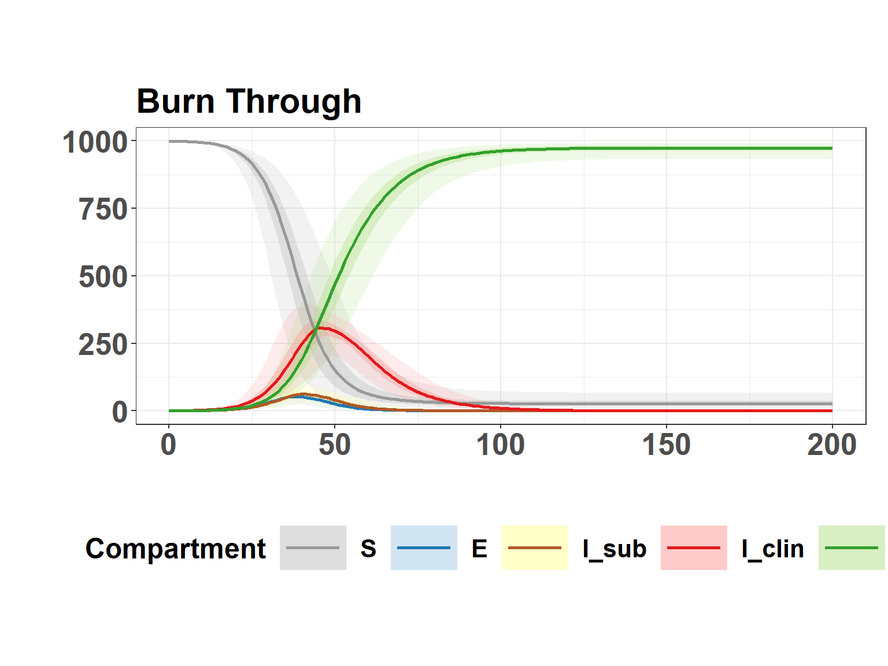

Compartmental Models
Scenario-based simulation to compare estimated latent, subclinical, and incubation rates.
Under Construction
Work in progress!
SEIIR Model
Basic model
Hide code
seiir_model <- function(times, state, parameters) {
with(as.list(c(state, parameters)), {
dS <- -beta * S * (I_sub + I_clin) / N
dE <- beta * S * (I_sub + I_clin) / N - sigma * E
dI_sub <- p_sub * sigma * E - lambda * I_sub
dI_clin <- (1 - p_sub) * sigma * E + lambda * I_sub - gamma_clin * I_clin
dR <- gamma_clin * I_clin
sub_inc <- p_sub * sigma * E
clin_inc <- (1 - p_sub) * sigma * E + lambda * I_sub
list(c(dS, dE, dI_sub, dI_clin, dR), sub_inc = sub_inc, clin_inc = clin_inc)
})
}
# initial values
initial_state <- c(
S = 999,
E = 1,
I_sub = 0,
I_clin = 0,
R = 0
)
# sampling distributions
param_distributions <- list(
beta_meanlog = log(0.3), beta_sdlog = 0.1, # ??
sigma_meanlog = log(1/1.3290530), sigma_sdlog = 0.1, # study average per AFT
lambda_meanlog = log(1/2.4793733), lambda_sdlog = 0.1, # study average per AFT
gamma_clin_meanlog = log(1/10.8), gamma_clin_sdlog = 0.1, # Shankar's 2019
p_sub_shape1 = 10, p_sub_shape2 = 5, # prob of I_sub -> I_clin ~0.68-0.75
N = 1000 # herd size
)Run Simulation
Hide code
full_results <- simulate_SEIIR_intervention(seiir_model,
param_distributions,
initial_state,
n_iterations = 1000,
timesteps = 200)Plot dynamics
Hide code
plot_seiir_dynamics(full_results$summary, plot_title = "Burn Through")
Plot incidence
Hide code
ratio_out <- calculate_ratio_subclinical(full_results$summary)
ratio_out$total[2]/ratio_out$total[1][1] 0.6383648Hide code
plot_incidence_bar(full_results$summary)Simulation with Intervention
Hide code
interv_results <- simulate_SEIIR_intervention(seiir_model,
param_distributions,
initial_state,
n_iterations = 1000,
timesteps = 200,
detect = 3, # when clinical cases >= detect, 3 per Backer 2012
vacc_effect = 0.20, # effectiveness
immune_param = c(7, 1) # mean and sd for delay before immunity
)Time of intervention
Hide code
interv_time <- interv_results$all_results %>%
filter(I_clin >= 3) %>%
slice_head(n = 1) %>%
pull(time)
interv_time[1] 13Plot intervention dynamics
Hide code
plot_seiir_dynamics(interv_results$summary, plot_title = "Intervention", vline=interv_time)Plot incidence
Hide code
ratio_out <- calculate_ratio_subclinical(interv_results$summary)
ratio_out$total[2]/ratio_out$total[1][1] 0.6367239Hide code
plot_incidence_bar(interv_results$summary)